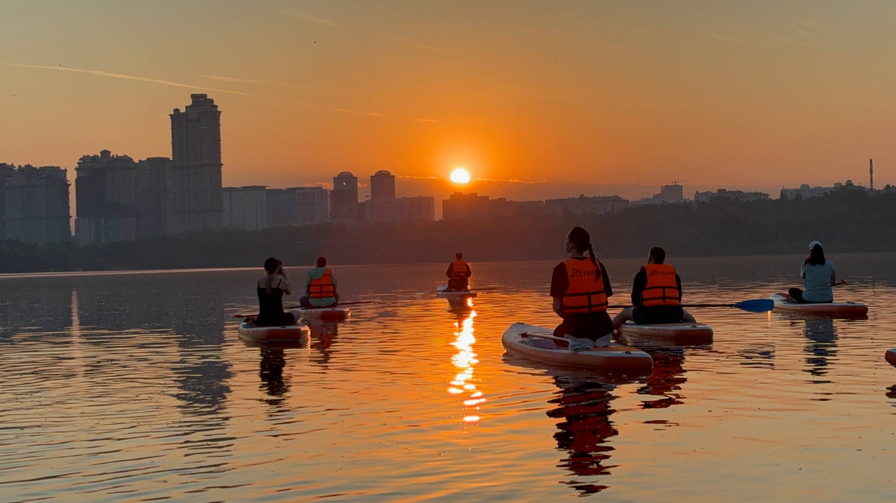

Нерская река.
Два дня без спешки.
Одна из самых красивых рек Мещёры: янтарно-коричневая от торфа вода, извилистое русло, песчаные пляжи среди сосновых боров. Закат на воде, палатки, костёр, рассвет над рекой — и никакого расписания.
Река, которая не похожа на городской маршрут
Нерская течёт через торфяники и сосновые боры Мещёры, и это меняет саму воду — она приобретает янтарно-коричневый оттенок, почти чайный, но остаётся чистой. Русло узкое и извилистое, с частыми поворотами: маршрут держит внимание постоянно, в отличие от прямых участков широких городских рек.
Это единственный маршрут в линейке, рассчитанный не на вечер, а на два дня. Первый день — путь и лагерь у воды, второй — продолжение сплава и финиш. Спешить некуда: программа строится вокруг реки, а не вокруг расписания.

Два дня на воде
Сбор, инструктаж, старт
Встречаемся на месте старта, получаем байдарки и снаряжение, проходим инструктаж — рассказываем про маршрут дня и особенности реки: течение, повороты, места для отдыха. По желанию — сопровождающий на маршруте.
Сплав по извилистому руслу
Идём по узкому руслу среди торфяников и сосняков, делаем остановки на песчаных пляжах — их на Нерской много, и почти на каждой можно искупаться или устроить перекус.
Закат на воде, лагерь, костёр
Встаём лагерем на одном из пляжей до заката — так, чтобы застать закат уже на месте стоянки. Ставим палатки, разводим костёр, готовим еду на огне. Это тот момент маршрута, ради которого едет большинство участников.
Утро у реки
Река с торфяной водой особенно красива в утреннем тумане. Завтрак у костра, сборы лагеря.
Продолжение сплава и выход
Проходим оставшуюся часть маршрута и финишируем в точке выхода. Разбор снаряжения, трансфер — маршрут завершён.

Полностью организованная экспедиция
Мещёра с воды
Цена зависит от размера группы
| Размер группы | Цена за человека |
|---|---|
| 2–3 человека | 5 000 ₽ |
| От 4 человек | 4 000 ₽ |
В цену включены снаряжение, ночёвка, готовка на костре и сопровождение технического специалиста весь маршрут.
Подготовка к двум дням на воде
Одежда и обувь
Сменная одежда на два дня, вещи, которые не жалко намочить, закрытая обувь для воды, тёплый слой на вечер и утро — у реки прохладнее, чем в городе.
Личные вещи
Спальный мешок при желании (можем предоставить свой — уточните при бронировании), средства от насекомых, солнцезащитный крем, личные лекарства.
Документы и техника
Документ, удостоверяющий личность. Телефон и камеру — в гермомешок, который выдаём на маршруте.
«Нерская — это отдельный вид отдыха. Два дня без телефона, только вода, сосны и костёр. Возвращаемся уже третий раз.»
Свободные даты уходят быстро
Двухдневный формат ограничен по количеству групп в сезон — бронируйте заранее.